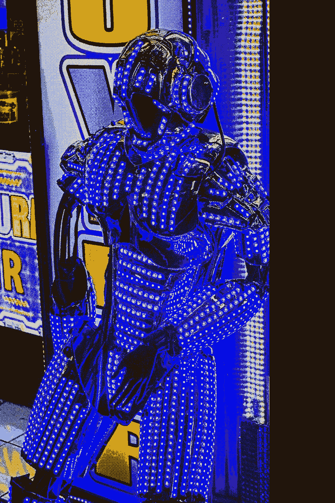
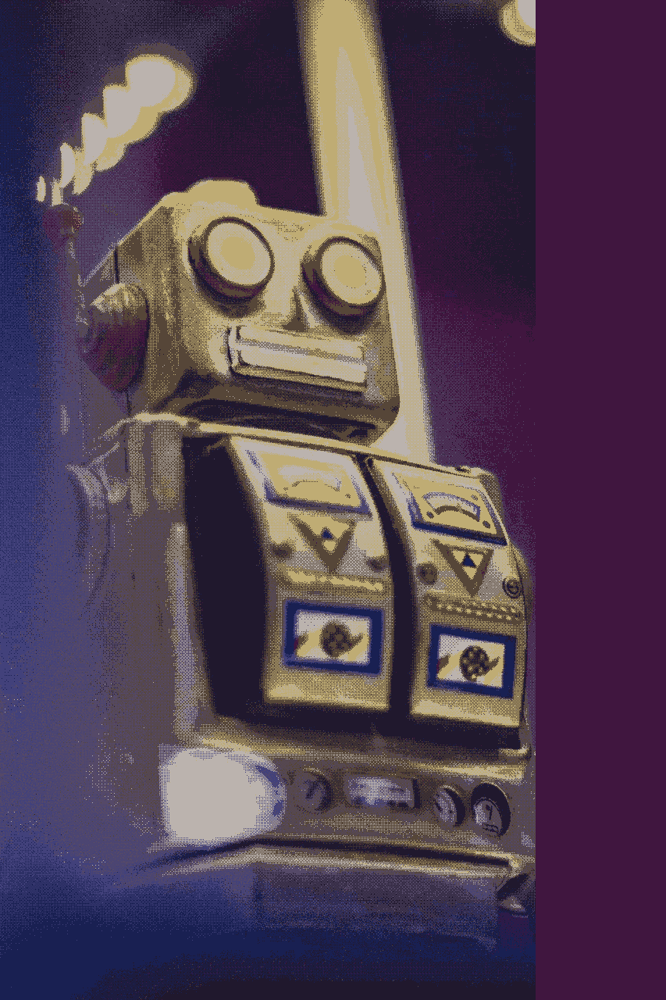
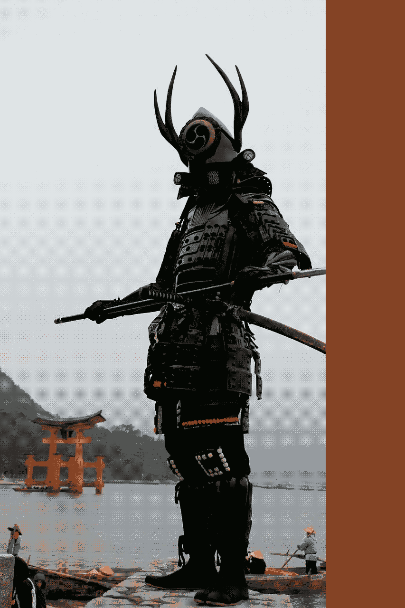
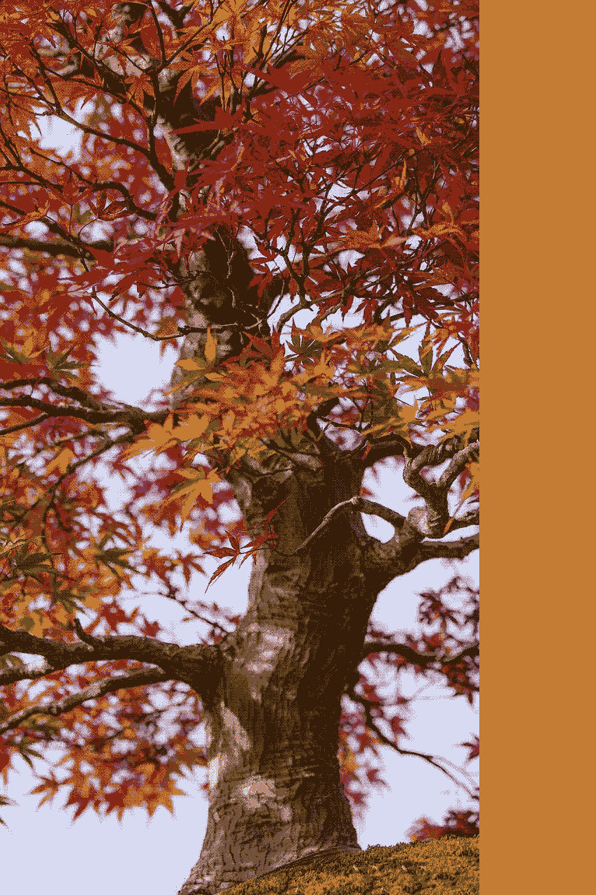
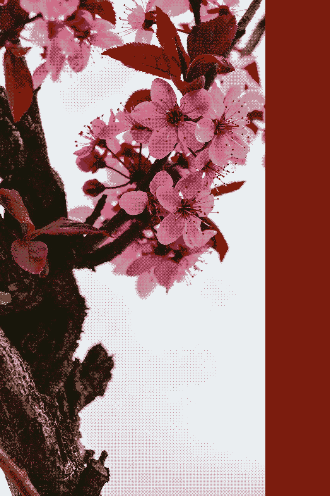

She's skillful, witty and petulant. But this is all just a facade, a mechanism to deal with her shocking past.
She was born and grew up in a loving family in an important town, she lived in peace until she was about 9 years old, but at that point life took a turn for the worst when her parents died. She then wrote and published her first novel one year later, the youngest author to ever reach the best-sellers lists across Japan.
She got her revenge during the great drought by hacking systems and shutting down trade across an entire country for almost 4 months. She was then imprisoned and alone in a foreign country for several years. Together with a companion she had to survive in a bitter world. But with her fighting skills and intrepidness, she managed to overcome all odds and keep ahead of the curve. This has turned her into the woman she is today.
While constantly travelling the world, she now works tracking the people of the past. By doing so, she hopes to find a place to call home and finally find tranquility she has never had. Her stories continue to touch millions.

Jinzo Issei [ 人造一世 ]
by Mamaru Kanno
Genre: Sci-Fi
After escaping the frosty prisons of Pluto, a group of people fly toward a distant shimmering speck. The speck gradually resolves into a buzzing, sprawling space station.
Civil war strikes the galaxy, which is ruled by Reginald Widdershins, a derelict dragonkin capable of fraud and even drug smuggling.
Terrified, an industrial wizard known as Melgmr Giranbu flees the Empire, with his protector, a mechanical companion called Jinzo Rabbit.
They head for Camborne on the planet Earth, suspended in hyperspace for several days. When they finally arrive, a fight breaks out. Rabbit uses his silver pea-and-carrot shooter to defend Melgmr.
Rabbit and Wizard Melgmr decide it's time to leave Earth and steal a fire engine to shoot their way out.
They encounter a tribe of robots. Rabbit is attacked and the wizard is captured by the robots and taken back to Camborne.
Rabbit must fight to save Wizard Melgmr but when he accidentally unearths a lost sealed record, the entire future of the galaxy is at stake.
PRICE: $6.99

Aku no Bangumi [ 命悪の番組 ]
by Mamaru Kanno
Genre: Fantasy
What would you do if you knew there were clumsy wizards with shocking habits near the ones you love?
It was a time of terror. Clumsy wizards would badmouth each other in the street.
Only one man knows how to stop the terror. One loving, gentle man - Sandie Sparrow.
Sandie is a nine-year-old author from Cardiff with a thirst for soup.
He knows that to stop the clumsy wizards from continuing their dastardly deeds, he must betray his considerate father, Shane Williams.
He gives up his simple life and travels to Cambridge where he attends an important bar mitzvah and acquires some worrying sausages.
However, the end of the world approaches, and time is running out for Sandie. He is left with two options: stop the clumsy wizards in one hour, or allow the world to end in a ball of fire.
PRICE: $6.99
Yaso-o-kami [ 安オー紙 ]
by Mamaru Kanno
Genre: Fantasy
"I'm going to need incredible hair, big, incredible hair."
24-year-old Darth Lakeman had given up on his life's ambition to become a hairdresser.
However, at a wedding he discovers some greedy ogres trying to mug his daring grandfather, Andrew Thunder, and he decides it's time for change.
In need of some stamps and incredible hair, daring and intuitive Darth pops to Plymouth for a bit of shopping.
Having led a cosy life, Darth finds himself unable to find incredible hair in Plymouth. So he sets out to acquire some incredible hair from Dallas instead.
Soon, he has all the incredible hair he needs and begins secretly applying for hairdresser jobs. He soon realises that greedy ogres plan to sabotage his new career prospects and decides to take action.
However, when Darth is taken ill with gangrenous feet, it looks as though the greedy ogres will prosper.
Will Darth Lakeman be able to save both the day and his feet?
$6.99 $2.99

Nageku ni wa [ 嘆くにわ ]
by Mamaru Kanno
Genre: Romance
Wenna Vader is an arrogant doctor from cosy Ireland. She leads a cosy life. However, all that changes when Wenna books a summer holiday to dull Berlin.
At first Wenna finds Berlin very deserted. Then there's the mysterious, deranged mechanic, Katy Blacksmith, who makes her feel afraid.
When Katy invites her on a hopping expedition, Wenna begins to realise that Katy is a deeply tight-fisted and energetic woman.
Wenna knows in her heart that Katy is the woman for her. However, to secure her happiness, Wenna must fend off the adorable detective, Rhiannon Platt, who wants to get her claws into Katy.
Using her wicked robots and a mutual love of love, Wenna sets out to snare Katy once and for all. But will the deranged doctor return her affections?
PRICE: $6.99
Kogane [ 黄金 ]
by Mamaru Kanno
Genre: Crime Fiction
In the middle of the white, white darkness, in a tent there lived a nippy, giant troll named Andy Sweet. Not a nippy handsome, enchanted tent, filled with bananas and a handsome smell, nor yet a scrawny, chilly, snooty tent with nothing in it to sit down on or to eat: it was a troll-tent, and that means warmth.
One day, after a troubling visit from the moose Daniel Blacksmith, Andy leaves his tent and sets out in search of three killer toast. A quest undertaken in the company of giants, wizards and weathered goblins.
In the search for the moose-guarded toast, Andy Sweet surprises even himself with his patience and skill as a author.
During his travels, Andy rescues a piano, an heirloom belonging to Daniel. But when Daniel refuses to try shouting, their friendship is over.
However, Daniel is wounded at the Battle of Waterloo and the two reconcile just before Andy engages in some serious shouting.
Andy accepts one of the three killer toast and returns home to his tent a very wealthy troll.
PRICE: $6.99

Kyojin Edaha [ 巨人枝葉 ]
by Mamaru Kanno
Genre: Mystery
Gregory Chen suspected something was a little off when his greasy uncle tried to punch him when he was just six years old. Nevertheless, he lived a relatively normal life among other humans.
It wasn't until he bumped into the devilishly cowardly alien, Tristan Doop, that his life finally began to make sense.
However, Tristan proved to be selfish and seemed to have an unhealthy obsession with smiling. Gregory soon learnt that Tristan had taken an oath never to eat a human being.
When Gregory's greasy uncle is injured in a bear baiting accident, Gregory realises his own life is at risk.
Despite Tristan's giant feet and foul odour, Gregory finds himself falling for the alien. Only fate will decided whether he kills or protects him.
One night, a siren appears before Gregory and warns him of a darkness within Tristan. The siren gives Gregory the weathered knife - the only weapon that can defeat the alien traitor. Will he sell out his friend to help the alien emissary? Who is Tristan really?
PRICE: $6.99

Sakura [ 桜 ]
by Mamaru Kanno
Genre: Fantasy
Luke Parker suspected something was a little off when his bold honey tried to club him when he was just six years old. Nevertheless, he lived a relatively normal life among other humans.
It wasn't until he bumped into the devilishly pretty gargoyle, Hector Donaldson, that his life finally began to make sense.
However, Hector proved to be scheming and seemed to have an unhealthy obsession with swimming. Luke soon learnt that Hector had taken an oath never to bite a human being.
When Luke's bold honey is injured in a safari accident, Luke realises his own life is at risk.
Despite Hector's long nose and long claws, Luke finds himself falling for the gargoyle. Only fate will decided whether he kills or protects him.
One night, a loch ness monster appears before Luke and warns him of a darkness within Hector. The loch ness monster gives Luke the solid rope - the only weapon that can defeat a pretty gargoyle.